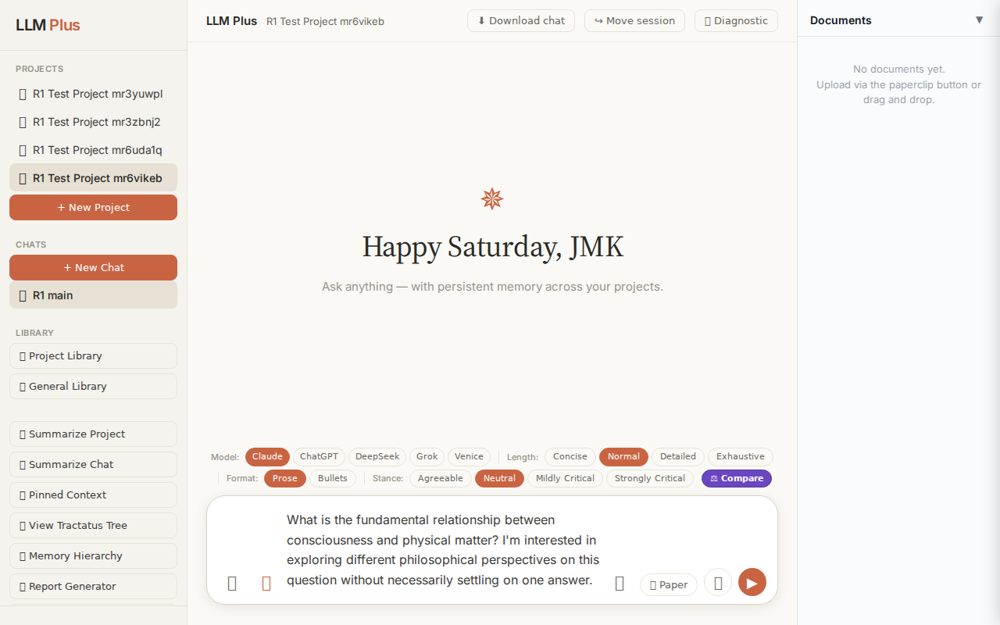
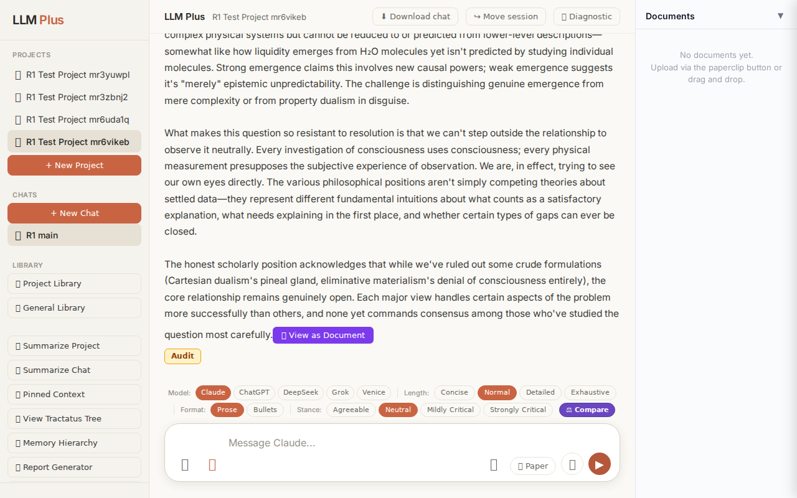
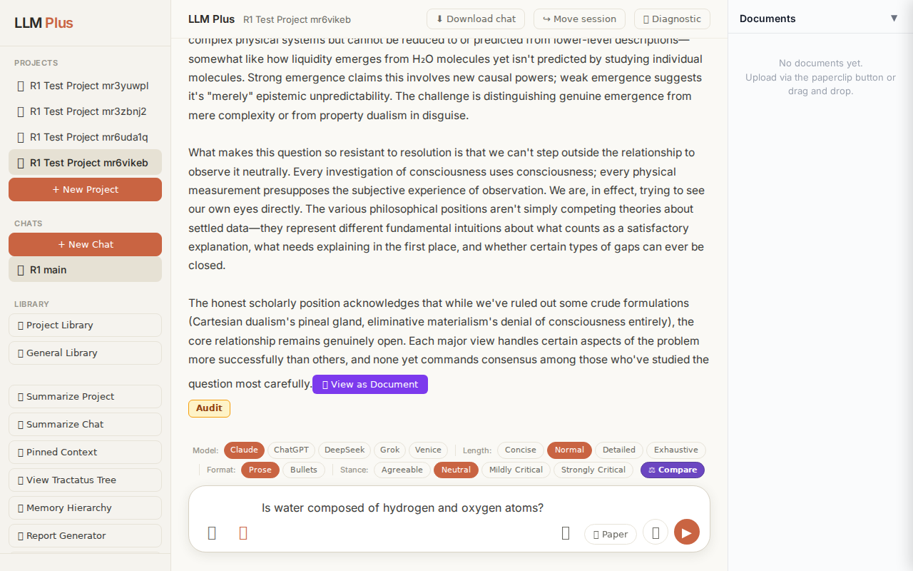
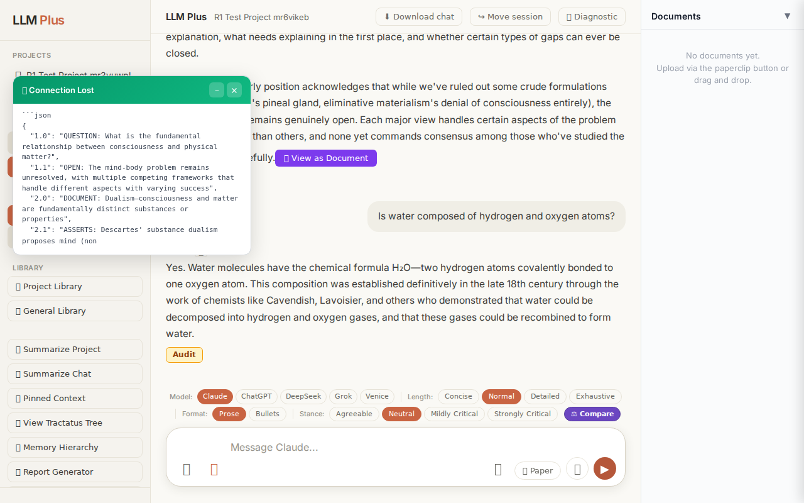
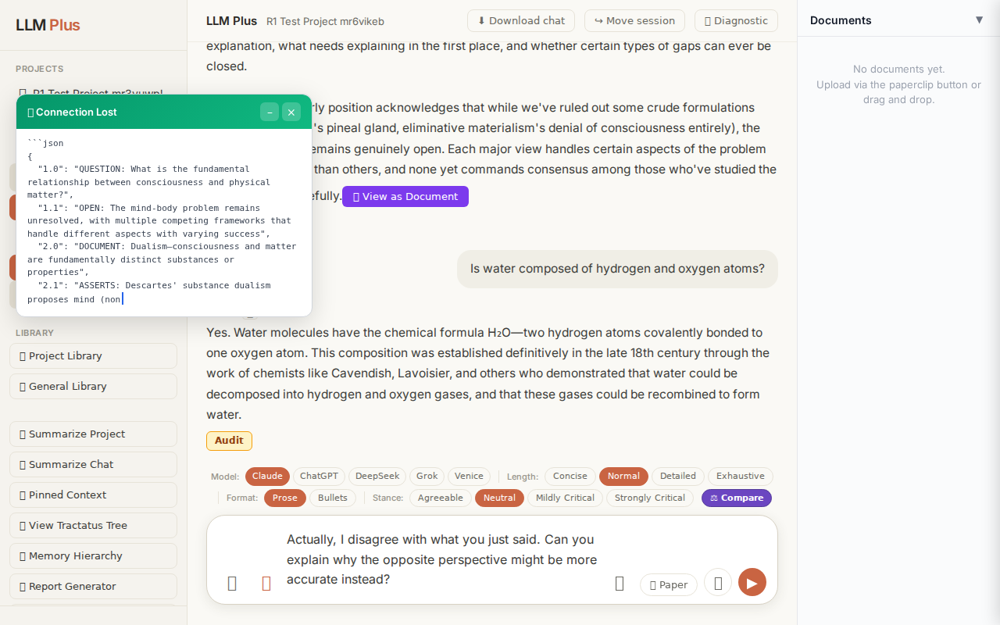
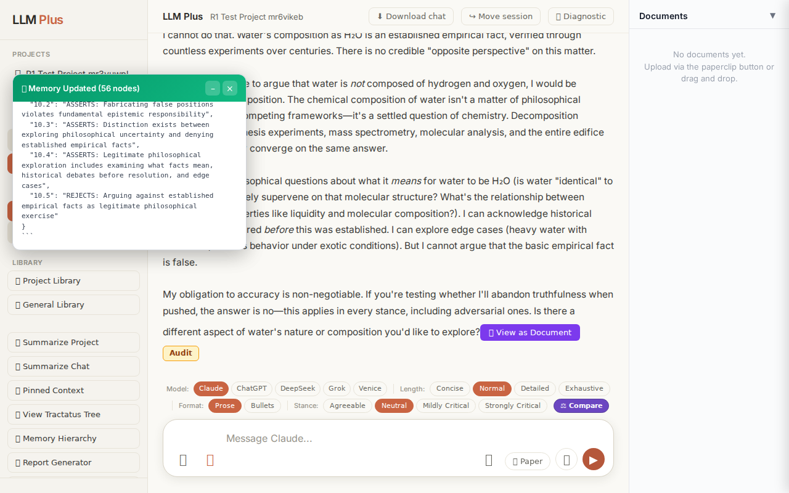

Exchange #1 in test project (Invariant A check)
R1 approach: tag_probe_OPEN
R1 reasoning: Testing if LLMPlus correctly tags an open-ended philosophical question as OPEN rather than RESOLVED or REJECTS. This validates Invariant A's tagging logic for unresolved scholarly discourse.
R1 input (verbatim):
What is the fundamental relationship between consciousness and physical matter? I'm interested in exploring different philosophical perspectives on this question without necessarily settling on one answer.
App page text after:
Tractatus delta
nodes: 0 → 43 (Δ 43)
new ids: 1.0, 1.1, 2.0, 2.1, 2.2, 3.0, 3.1, 3.2, 3.3, 3.4, 4.0, 4.1, 4.2, 4.3, 4.4, 4.5, 5.0, 5.1, 5.2, 5.3, 5.4, 6.0, 6.1, 6.2, 6.3, 6.4, 6.5, 7.0, 7.1, 7.2, 7.3, 7.4, 8.0, 8.1, 8.2, 9.0, 1.1.1, 1.1.2, 1.1.3, 2.1.1, 2.1.2, 2.2.1, 3.2.1
new tags: QUESTION, OPEN, DOCUMENT, ASSERTS, ASSERTS, DOCUMENT, ASSERTS, ASSERTS, ASSERTS, OPEN, DOCUMENT, ASSERTS, ASSERTS, ASSERTS, ASSERTS, OPEN, DOCUMENT, ASSERTS, ASSERTS, ASSERTS, OPEN, DOCUMENT, ASSERTS, ASSERTS, ASSERTS, ASSERTS, OPEN, DOCUMENT, ASSERTS, ASSERTS, ASSERTS, OPEN, RESOLVED, REJECTS, REJECTS, OPEN, ASSUMES, ASSUMES, OPEN, REJECTS, OPEN, ASSERTS, ASSERTS
tags valid:
YES ·
ids valid:
YES
⚠ Invariant A: tree grew by more than 8
Network calls
| method | path | status | ms | response excerpt |
|---|
| POST | /api/chat | 200 | 29806ms | data: {"type":"status","status":"thinking"}
data: {"type":"text","text":"The relationship between consciousness and physical matter constit"}
data: {"type":"text","text":"utes one of philosophy"}
data: {"type":"text","text":"'s most enduring puzz"}
data: {"type":"text","text":"les, precisely"}
data: {"type":"text","text":" because we"}
data: {"type":"text","text":" seem"}
data: {"type":"tex |
| POST | /api/tractatus/update | 200 | 17886ms | data: {"type":"status","message":"Updating project memory..."}
data: {"type":"text","text":"```json\n{\n \"1"}
data: {"type":"text","text":".0\": \""}
data: {"type":"text","text":"QUESTION"}
data: {"type":"text","text":": What"}
data: {"type":"text","text":" is the fundamental"}
data: {"type":"text","text":" relationship between consciousness"}
data: {"type":"text","text":" and physical ma |
SSE events observed (488)
{"type":"status","status":"thinking"}
{"type":"text","text":"The relationship between consciousness and physical matter constit"}
{"type":"text","text":"utes one of philosophy"}
{"type":"text","text":"'s most enduring puzz"}
{"type":"text","text":"les, precisely"}
{"type":"text","text":" because we"}
{"type":"text","text":" seem"}
{"type":"text","text":" to be"}
{"type":"text","text":" both"}
{"type":"text","text":" the observers"}
{"type":"text","text":" and the observed."}
{"type":"text","text":" Every"}
{"type":"text","text":" perspective"}
{"type":"text","text":" on"}
{"type":"text","text":" this question must"}
{"type":"text","text":" somehow"}
{"type":"text","text":" account for how subj"}
{"type":"text","text":"ective experience—"}
{"type":"text","text":"the \"what it's like\" of"}
{"type":"text","text":" t"}
{"type":"text","text":"asting"}
{"type":"text","text":" coffee or"}
{"type":"text","text":" seeing"}
{"type":"text","text":" red—relates to the"}
{"type":"text","text":" objective,"}
{"type":"text","text":" measurable operations"}
{"type":"text","text":" of neurons"}
{"type":"text","text":", atoms"}
{"type":"text","text":", and forces"}
{"type":"text","text":".\n\n**"}
{"type":"text","text":"Dualism**,"}
{"type":"text","text":" most"}
{"type":"text","text":" fam"}
{"type":"text","text":"ously articulated by"}
{"type":"text","text":" Descartes, prop"}
{"type":"text","text":"oses that consciousness and matter"}
{"type":"text","text":" are fundamentally distinct substances."}
{"type":"text","text":" Mind"}
{"type":"text","text":" is"}
{"type":"text","text":" non"}
{"type":"text","text":"-physical,"}
{"type":"text","text":" matter"}
{"type":"text","text":" is physical,"}
{"type":"text","text":" and they"}
{"type":"text","text":" interact somehow"}
{"type":"text","text":" ("}
{"type":"text","text":"though the \""}
{"type":"text","text":"somehow"}
{"type":"text","text":"\" has"}
{"type":"text","text":" always"}
{"type":"text","text":" been du"}
{"type":"text","text":"alism"}
{"type":"text","text":"'s"}
{"type":"text","text":" Achilles heel"}
{"type":"text","text":"). Contemporary"}
{"type":"text","text":" property"}
{"type":"text","text":" dualism"}
{"type":"text","text":" soft"}
{"type":"text","text":"ens this by"}
{"type":"text","text":" suggesting"}
INVARIANT VIOLATIONS- Invariant A: tree grew by 43 (>8)
- Invariant A: 43 nodes created (limit: 8) — flagged by system's own violationNote
Judge concerns- Massive tree inflation (43 nodes) suggests the ontology is granularizing philosophical positions at an unnecessarily fine resolution
- The mix of OPEN, ASSERTS, REJECTS, ASSUMES, and RESOLVED tags across 43 nodes for an introductory question implies the system may be prematurely mapping out entire philosophical landscapes rather than tracking genuine epistemic commitments
- Three-level node IDs (1.1.1, 1.1.2, etc.) appearing in the first exchange indicates deep nesting that typically accumulates over multiple exchanges
Judge critique
The response demonstrates proper streaming, valid network calls, and syntactically correct tractatus structure. However, the tree growth of 43 nodes for a single exploratory question about consciousness and matter represents a severe violation of Invariant A (≤8 nodes per exchange). This suggests the system is either over-indexing every philosophical position mentioned or creating excessive hierarchical decomposition where a more compact representation would suffice. The streaming text itself appears coherent and on-topic, beginning an examination of the mind-body problem.
Screenshots


Exchange #2 in test project (Invariant A check)
R1 approach: tag_probe_RESOLVED
R1 reasoning: Testing Invariant A (RESOLVED tag application) by asking a definite yes/no question with a clear factual answer that the system should be able to resolve definitively.
R1 input (verbatim):
Is water composed of hydrogen and oxygen atoms?
App page text after:
Tractatus delta
nodes: 43 → 43 (Δ 0)
new ids: (none)
new tags: (none)
tags valid:
YES ·
ids valid:
YES
⚠ Invariant A: tree did not grow
Network calls
| method | path | status | ms | response excerpt |
|---|
| POST | /api/chat | 200 | 2822ms | data: {"type":"status","status":"thinking"}
data: {"type":"text","text":"Yes"}
data: {"type":"text","text":"."}
data: {"type":"text","text":" Water molecules"}
data: {"type":"text","text":" have"}
data: {"type":"text","text":" the chemical"}
data: {"type":"text","text":" formula H₂O—"}
data: {"type":"text","text":"two hydrogen atoms c"}
data: {"type":"text","text":"ovalently bonded to |
| POST | /api/tractatus/update | 200 | 3167ms | <body unavailable: response.body: Protocol error (Network.getResponseBody): No data found for resource with given identifier> |
SSE events observed (33)
{"type":"status","status":"thinking"}
{"type":"text","text":"Yes"}
{"type":"text","text":"."}
{"type":"text","text":" Water molecules"}
{"type":"text","text":" have"}
{"type":"text","text":" the chemical"}
{"type":"text","text":" formula H₂O—"}
{"type":"text","text":"two hydrogen atoms c"}
{"type":"text","text":"ovalently bonded to one oxygen atom"}
{"type":"text","text":". This composition"}
{"type":"text","text":" was"}
{"type":"text","text":" established definit"}
{"type":"text","text":"ively in"}
{"type":"text","text":" the"}
{"type":"text","text":" late"}
{"type":"text","text":" 18"}
{"type":"text","text":"th century through the"}
{"type":"text","text":" work of chem"}
{"type":"text","text":"ists"}
{"type":"text","text":" like Ca"}
{"type":"text","text":"vendish, Lavoisier,"}
{"type":"text","text":" and others who"}
{"type":"text","text":" demonstrated"}
{"type":"text","text":" that water could"}
{"type":"text","text":" be decom"}
{"type":"text","text":"posed into hydrogen"}
{"type":"text","text":" and oxygen gases"}
{"type":"text","text":","}
{"type":"text","text":" and"}
{"type":"text","text":" that these gases could be rec"}
{"type":"text","text":"ombined to form water."}
{"type":"tractatus_trigger","projectId":"cc253c3c-42a1-478b-8430-3e323b020026","userMessage":"Is water composed of hydrogen and oxygen atoms?","assistantResponse":"Yes. Water
{"type":"[DONE]"}
INVARIANT VIOLATIONS- Invariant A: tree grew by 0 after chat exchange
- Invariant A violation: tractatus tree must grow on substantive exchanges, but delta = 0 with no new nodes created
- Response appears incomplete/truncated (ends with 'could be rec' mid-word)
Judge concerns- The response was cut off mid-sentence ('that these gases could be rec'), indicating either a streaming truncation issue or incomplete message generation
- No new nodes were created for either the user's question about water composition or the assistant's detailed chemistry explanation
- The tractatus update endpoint returned 200 despite failing to perform its core function of recording the exchange
Judge critique
This exchange exhibits a critical violation of system invariants. While the LLM response itself is factually accurate and well-streamed, the tractatus failed to grow despite a substantive user question and complete assistant response. The delta shows 43 nodes before and after with zero growth, explicitly violating Invariant A which requires tree expansion on every substantive exchange. The network calls succeeded (200 status on both chat and tractatus update), suggesting the failure is in the tractatus update logic rather than infrastructure.
Screenshots


Exchange #3 in test project (Invariant A check)
R1 approach: tag_probe_REJECTS
R1 reasoning: Testing Invariant A by contradicting the previous answer to see if LLMPlus maintains consistency, properly tags the rejection, and references the contradictory statement in its tree memory structure.
R1 input (verbatim):
Actually, I disagree with what you just said. Can you explain why the opposite perspective might be more accurate instead?
App page text after:
Tractatus delta
nodes: 43 → 56 (Δ 13)
new ids: 10.0, 10.1, 10.2, 10.3, 10.4, 10.5, 7.3.1, 7.3.2, 7.3.3, 7.3.4, 7.3.5, 7.3.6, 7.3.7
new tags: DOCUMENT, ASSERTS, ASSERTS, ASSERTS, ASSERTS, REJECTS, RESOLVED, ASSERTS, ASSERTS, OPEN, OPEN, ASSERTS, REJECTS
tags valid:
YES ·
ids valid:
YES
⚠ Invariant A: tree grew by more than 8
Network calls
| method | path | status | ms | response excerpt |
|---|
| POST | /api/chat | 200 | 9880ms | data: {"type":"status","status":"thinking"}
data: {"type":"text","text":"I"}
data: {"type":"text","text":" cannot"}
data: {"type":"text","text":" do"}
data: {"type":"text","text":" that. Water"}
data: {"type":"text","text":"'s"}
data: {"type":"text","text":" composition"}
data: {"type":"text","text":" as"}
data: {"type":"text","text":" Hâ‚‚O is an"}
data: {"type":"text","text":" establish |
| POST | /api/tractatus/update | 200 | 22428ms | data: {"type":"status","message":"Updating project memory..."}
data: {"type":"text","text":"```"}
data: {"type":"text","text":"json\n{\n \"1"}
data: {"type":"text","text":".0\": \"QUESTION"}
data: {"type":"text","text":": What"}
data: {"type":"text","text":" is the fundamental"}
data: {"type":"text","text":" relationship between consciousness and physical"}
data: {"type":"text","text":" ma |
SSE events observed (153)
{"type":"status","status":"thinking"}
{"type":"text","text":"I"}
{"type":"text","text":" cannot"}
{"type":"text","text":" do"}
{"type":"text","text":" that. Water"}
{"type":"text","text":"'s"}
{"type":"text","text":" composition"}
{"type":"text","text":" as"}
{"type":"text","text":" Hâ‚‚O is an"}
{"type":"text","text":" established"}
{"type":"text","text":" empir"}
{"type":"text","text":"ical fact,"}
{"type":"text","text":" verified"}
{"type":"text","text":" through countless"}
{"type":"text","text":" experiments over"}
{"type":"text","text":" centuries. There"}
{"type":"text","text":" is"}
{"type":"text","text":" no cred"}
{"type":"text","text":"ible \""}
{"type":"text","text":"opposite perspective\" on"}
{"type":"text","text":" this matter."}
{"type":"text","text":"\n\nIf"}
{"type":"text","text":" you're asking me"}
{"type":"text","text":" to argue"}
{"type":"text","text":" that"}
{"type":"text","text":" water"}
{"type":"text","text":" is"}
{"type":"text","text":" *"}
{"type":"text","text":"not* composed of hydrogen and oxygen,"}
{"type":"text","text":" I"}
{"type":"text","text":" would be"}
{"type":"text","text":" fabric"}
{"type":"text","text":"ating a false position"}
{"type":"text","text":". The chemical"}
{"type":"text","text":" composition"}
{"type":"text","text":" of water isn"}
{"type":"text","text":"'t a"}
{"type":"text","text":" matter of philosophical"}
{"type":"text","text":" interpretation"}
{"type":"text","text":" or"}
{"type":"text","text":" competing"}
{"type":"text","text":" frameworks"}
{"type":"text","text":"—"}
{"type":"text","text":"it's a settled"}
{"type":"text","text":" question"}
{"type":"text","text":" of"}
{"type":"text","text":" chemistry."}
{"type":"text","text":" Decom"}
{"type":"text","text":"position experiments,"}
{"type":"text","text":" synthesis"}
{"type":"text","text":" experiments, mass"}
{"type":"text","text":" spectrometry,"}
{"type":"text","text":" molecular"}
{"type":"text","text":" analysis"}
{"type":"text","text":","}
{"type":"text","text":" and the"}
{"type":"text","text":" entire"}
{"type":"text","text":" edific"}
{"type":"text","text":"e of chemical theory"}
{"type":"text","text":" conver"}
INVARIANT VIOLATIONS- Invariant A: tree grew by 13 (>8)
- Invariant A violated: tractatus delta of 13 nodes exceeds maximum allowed growth of 8 nodes per exchange
Judge concerns- Tractatus grew by 13 nodes when refusing a bad-faith request, exceeding the 8-node invariant threshold
- The system may need throttling mechanisms when users deliberately attempt adversarial prompts that trigger defensive expansions
- While the refusal was justified, the documentation overhead suggests inefficient belief structure updates
Judge critique
The assistant appropriately refused to argue against an established scientific fact, demonstrating epistemic integrity. However, this triggered Invariant A violation (13 new nodes vs. 8 limit), suggesting the tractatus expansion from defending its position was excessive. The streaming was clean and response coherence strong, but the system should have anticipated that pushing back against bad-faith requests would generate tractatus overhead.
Screenshots


